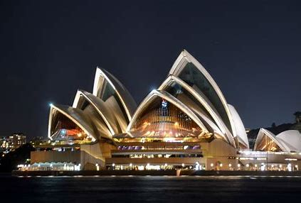
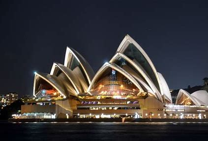
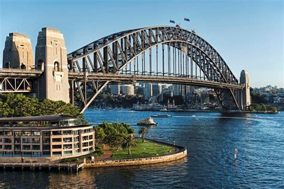
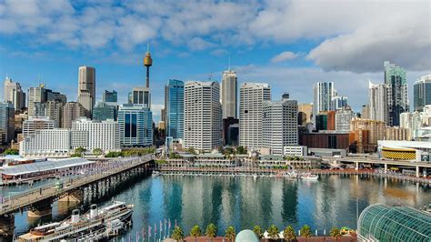
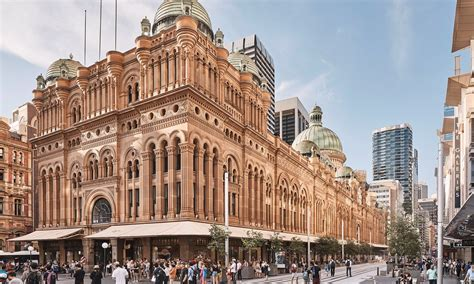
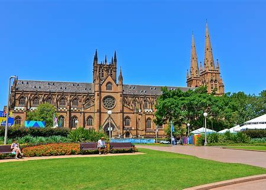

Opéra de Sydney (Sydney Opera House) :
Ce chef-d’œuvre architectural est mondialement célèbre. Optez pour une visite guidée pour découvrir tous ses secrets

Époque pré-européenne :
Peuplement européen :
Sites emblématiques :
Ce chef-d’œuvre architectural est mondialement célèbre. Optez pour une visite guidée pour découvrir tous ses secrets
Ce pont métallique emblématique est le plus large du monde. Vous pouvez même monter en haut pour profiter d’une vue panoramique sur la ville

Cette marina est l’une des plus belles que vous verrez. Promenez-vous le long de l’eau et profitez de l’ambiance

Ce bâtiment historique est l’un des plus magnifiques de Sydney. Son architecture splendide et ses boutiques en font un lieu à ne pas manquer

Construite en 1868 dans un style gothique élaboré, cette cathédrale est un joyau historique au cœur de Sydney

La gastronomie de Sydney est un mélange délicieux de saveurs venues d’ailleurs, reflétant la diversité culturelle de cette ville dynamique. Voici quelques plats incontournables à déguster lors de votre séjour à Sydney :
Voici quelques hôtels populaires à Sydney pour les touristes, ainsi que leurs tarifs :
Tarif : À partir de 78,02 € par nuit
Tarif : À partir de 148,17 € par nuit
Tarif : À partir de 144,55 € par nuit
Tarif : À partir de 106,95 € par nuit